Bibliothèques Python pour la Data Science : NumPy, Matplotlib et Pandas
- MON
- 2023-2024
- temps 2
- Alexandre Beyaert
Un MON traitant de l'utilisation des bibliothèques Python pour la Data Science.
Niveau : Facile
Prérequis : Bases en Python
Sommaire
- Introduction
- Bibliothèque NumPy
- Bibliothèque Matplotlib
- Bibliothèque Pandas
- Combinaison des bibliothèques
- Conclusion
- Bibliographie
1. Introduction
quid sklearn et seaborn ??
2. Bibliothèque NumPy
import numpy as np
La bibliothèque NumPy permet de faciliter l'application de calculs numériques en Python en introduisant aux tableaux.
Ces tableaux à N dimensions s'avèrent être bien plus utiles que les listes en Data Science dans la mesure où :
- leur coût mémoire est moins important que celui des séquences
- ils présentent beaucoup plus de méthodes que ces dernières et permettent une plus grande flexibilité et facilité dans les calculs.
Construire un tableau NumPy
Construction à la main np.array(object, dtype)
>>>np.array([1, 2, 3])
array([1, 2, 3])
>>>np.array([[0, 2 ,4], [1, 2, 3]])
array([[0, 2, 4],
[1, 2, 3]])
En 2D avec NumPy, l'axe 0 est celui selon les lignes, l'axe 1 celui selon les colonnes.
Ainsi, notre tableau B est bien une matrice à 2 lignes et 3 colonnes.
Remplissage automatique : 0, 1 ou identité
#np.zeros((shape), dtype)
>>>np.zeros((3,2))
array([[0., 0.],
[0., 0.],
[0., 0.]])
#np.ones((shape), dtype)
>>>np.ones((3,4))
array([[1., 1., 1., 1.],
[1., 1., 1., 1.],
[1., 1., 1., 1.]])
#np.ones(shape, dtype)
>>>np.ones(2)
array([[1., 0.],
[0., 1.]])
Remplissage aléatoire
- rand génère des valeurs aléatoires issues de la distribution uniforme sur l'intervalle [0,1]
- randn génère des valeurs aléatoires issues de la distribution normale centrée en 0
- randint génère des valeurs entières aléatoires issues d'une distribution uniforme sur un intervalle donné
#np.random.randn(lignes, colonnes)
>>>np.random.randn(3,4)
array([[ 0.32146014, -1.38563513, 0.346344 , -1.60361699],
[-0.26914238, 0.156633 , -0.16439682, -0.96573034],
[ 0.27903539, 0.69972398, -0.73055932, 0.47816189]])
Arange & linspace
Chacun de ces constructeurs renvoie une matrice de dimension 1 dont les nombres sont régulièrement espacés sur un intervalle spécifié.
Linspace permet de choisir le nombre de points alors qu'arange permet de définir l'intervalle entre ces points.
#np.linspace(start, stop, num)
>>>np.linspace(0,10,5)
array([ 0. , 2.5, 5. , 7.5, 10. ])
#np.arange(start, stop, step)
>>>np.arange(0,10,2)
array([0, 2, 4, 6, 8])
Quelques attributs utiles
- ndim : dimension du tableau
- shape : forme du tableau (tuple)
- size : nombre d'éléments dans le tableau
>>>A = np.array([[1,2],[2,3],[4,5]])
>>>A.ndim
2
>>>A.shape
(3, 2)
>>>A.size
6
Manipulation de tableaux
concatenate
>>>A = np.zeros((3,2))
>>>A
array([[0., 0.],
[0., 0.],
[0., 0.]])
>>>B = np.ones((3,2))
>>>B
array([[1., 1.],
[1., 1.],
[1., 1.]])
#np.concatenate((shape), axis=?)
>>>np.concatenate((A,B), axis=0)
array([[0., 0.],
[0., 0.],
[0., 0.],
[1., 1.],
[1., 1.],
[1., 1.]])
>>>np.concatenate((A,B), axis=1)
array([[0., 0., 1., 1.],
[0., 0., 1., 1.],
[0., 0., 1., 1.]])
En 2D, il est également possible d'utiliser np.hstack et np.vstack afin d'assembler selon l'axe 0 (vertical), l'axe 1 (horizontal)...
reshape
La fonction reshape est utilisée pour redimensionner la forme d'un tableau sans modifier les données qu'il contient.
>>>A = np.zeros((3,2)), B = np.ones((3,2))
>>>C = F = np.concatenate((D,E), axis=0)
print('La forme de C est', C.shape, 'et son nombre d\'items', C.size)
La forme de la matrice est (6, 2) et son nombre d'items 12
#C.reshape((shape))
>>>C.reshape((3,4))
array([[0., 0., 0., 0.],
[0., 0., 1., 1.],
[1., 1., 1., 1.]])
>>>print('La forme de C est', C.shape, 'et son nombre d\'items', C.size)
La forme de C est (3, 4) et son nombre d'items 12
Cette méthode est particulièrement utile lorsque l'on crée un tableau à une dimension afin d'éviter des erreurs de calcul matriciel.
>>>E = np.array([1, 2, 3])
>>>E.shape
(3,)
>>>E.reshape((E.shape[0], 1))
>>>E.shape
(3,1)
ravel
Enfin ravel permet "d'aplatir" un tableau pour qu'il n'ait plus qu'une seule dimension.
>>>D = np.array(([1,2,3], [4,5,6], [7,8,9]))
>>>D
array([[1, 2, 3],
[4, 5, 6],
[7, 8, 9]])
#D.ravel()
>>>D.ravel()
array([1, 2, 3, 4, 5, 6, 7, 8, 9])
Indexing, Slicing et Masking
Il faut désormais pouvoir parcourir un tableau et atteindre certains de leurs items.
A = np.array([[1, 2, 3], [4, 5, 6], [7, 8, 9]])
# Indexing
>>>A[1, 2]
6
# Slicing
>>>A[:,0]
array([1, 4, 7])
>>>A[::2,::2]
array([[1, 3],
[7, 9]])
>>>A[::2,::2] = 10
array([[10, 2, 10],
[ 4, 5, 6],
[10, 8, 10]])
# Masking (utile pour du filtrage/traitement d'image)
>>>B = np.random.randint(0, 255, [1024, 720])
array([[169, 231, 7, ..., 16, 243, 95],
[248, 80, 175, ..., 196, 95, 205],
[214, 218, 9, ..., 12, 7, 119],
...,
[ 86, 133, 92, ..., 97, 47, 7],
[125, 133, 108, ..., 239, 114, 107],
[240, 45, 106, ..., 46, 214, 74]])
>>>B[B>200] = 255
>>>B
array([[169, 255, 7, ..., 16, 255, 95],
[255, 80, 175, ..., 196, 95, 255],
[255, 255, 9, ..., 12, 7, 119],
...,
[ 86, 133, 92, ..., 97, 47, 7],
[125, 133, 108, ..., 255, 114, 107],
[255, 45, 106, ..., 46, 255, 74]])
Exemple d'un traitement d'image
#import de l'image d'origine et affichage
from scipy import misc
import matplotlib.pyplot as plt
face = misc.face(gray=True)
plt.imshow(face, cmap=plt.cm.gray)
plt.show()
face.shape
# traitement (zoom + éclaircissement des pixels proches du blanc)
h = face.shape[0]
w = face.shape[1]
A = face[int(h/4):int(3*h/4),int(w/4):int(3*w/4)]
A[A > 200] = 255
plt.imshow(A, cmap=plt.cm.gray)
plt.show()
Voici l'image d'origine :
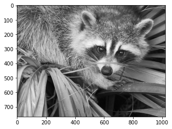
Et ici l'image traitée :
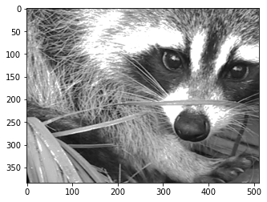
Algèbre linéaire avec les tableaux
A+B : addition classique
A*B : produit terme à terme
np.dot(A,B) : produit matriciel classique
np.transpose(A) : transposée de A
Différentes routines pour trouver le déterminant d'une matrice, ses valeurs propres et vecteurs propres, sa matrice inverse... sont disponibles dans la documentation scipy routines.linalg
Méthodes utiles
>>>A = np.array([[1, 2, 3], [4, 5, 6]])
>>>A
array([[1, 2, 3],
[4, 5, 6]])
>>>A.sum(axis=0)
array([5, 7, 9])
>>>A.sum(axis=1)
array([ 6, 15])
- A.prod() : effectue le produit des nombres de la matrice
- A.min(axis=?) : renvoie le minimum selon l'axe
- A.max(axis=?) : renvoie le maximum selon l'axe
- A.argmin(axis=?) : renvoie la position du min
- A.argmax(axis=?) : renvoie la position du max
- A.sort(axis=?) : trie le tableau selon l'axe
- A.argsort(axis=?) : retourne les index dans l'ordre de tri du tableau ( ne modifie pas le tableau)
D'autres routines mathématiques sont égalements décrites dans la documentation : https://docs.scipy.org/doc/numpy-1.13.0/reference/routines.math.html
Et statistiques : https://docs.scipy.org/doc/numpy-1.13.0/reference/routines.statistics.html
Il est également intéressant de remarquer :
- np.corrcoef(A) qui permet d'obtenir la matrice de corrélation de A : l'élément à l'emplacement (i, j) représente la corrélation entre la i-ème et la j-ème colonnes de la matrice A.
- np.unique(A, return_counts=True) qui va sortir un tableau indiquant le nombre de fois d'apparition d'un item de la matrice A.
- np.isnan(A) : renvoie un masque de A avec des False et True si isnan permettant ainsi de corriger ces NaN
3. Bibliothèque Matplotlib
import matplotlib.pyplot as plt
La bibliothèque Matplolib permet de créer des visualisations statiques, animées et interactives en Python.
Fonction Pyplot
Arguments de la fonction
plot(x, y, label=..., lw=..., ls=..., c=...)
- label : nom de la courbe
- lw : épaisseur du trait
- ls : style du trait
- c : couleur du trait
Attention, x et y doivent être de même dimension !
Corps type de l'affichage d'une figure
# définition de la fonction
import numpy as np
x = np.linspace(0, 2, 10)
y = x**2
# début de la figure
plt.figure(figsize=(12, 8)) #dimensions en pouces et non en centimètres
# contenu
plt.plot(x, y, label='quadratique', lw=6, ls='--', c='red')
plt.plot(x, x**3, label='cubique', lw=4, c='blue')
plt.title('figure 1')
plt.xlabel('abscisses')
plt.ylabel('ordonnées')
plt.legend()
# affichage
plt.show()
# sauvegarde dans le répertoire
plt.savefig('figure_type.png')
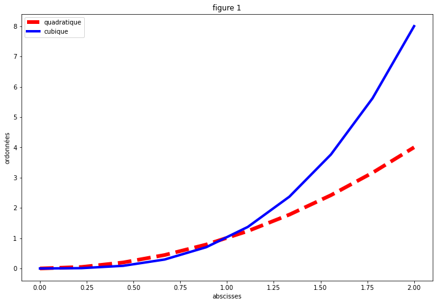
Il est également possible d'afficher plusieurs graphique avec subplot.
plt.figure()
#plt.subplot(lignes, colonnes, position)
plt.subplot(2, 2, 1)
plt.plot(x, x)
plt.title('courbe1')
plt.subplot(2, 2, 2)
plt.plot(x, np.cos(x))
plt.title('courbe2')
plt.subplot(2, 2, 3)
plt.plot(x, y)
plt.subplot(2, 2, 4)
plt.plot(x, np.cos(x))
plt.plot(x, np.sin(x))
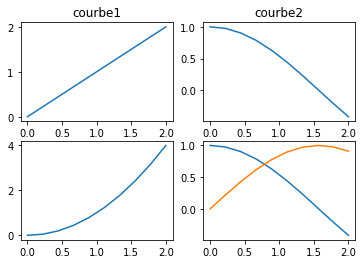
Différents graphiques
Afin de visualiser les différents graphiques que l'on peut tracer avec matlpolib, nous allons nous servir du dataset iris flower qui contient 150 exemples de fleurs d'iris répartis en 3 classes.
4 variables permettent alors de classer la fleur :
- longueur et largeur du pétale
- longeur et largeur du sépal
import numpy as np
import matplotlib.pyplot as plt
from sklearn.datasets import load_iris
iris = load_iris()
x = iris.data # Correction ici
y = iris.target
names = list(iris.target_names)
print(f'x contient {x.shape[0]} exemples et {x.shape[1]} variables') # Correction ici
print(f'il y a {np.unique(y).size} classes')
#exécution du code*
x contient 150 exemples et 4 variables
il y a 3 classes
Classification avec un nuage de points : plt.scatter
plt.scatter(x[:, 0], x[:, 1], c=y, alpha=0.5, s=100)
plt.xlabel('longueur sépale')
plt.ylabel('largeur sépale')
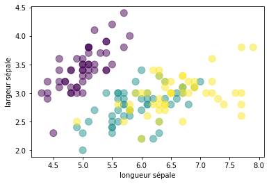
Visualisation 3D avec mpl_toolkits
from mpl_toolkits.mplot3d import Axes3D
ax = plt.axes(projection='3d')
ax.scatter(x[:, 0], x[:, 1], x[:, 2], c=y)
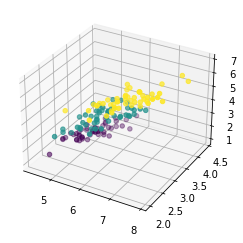
f = lambda x, y: np.sin(x) + np.cos(x+y)
X = np.linspace(0, 5, 100)
Y = np.linspace(0, 5, 100)
X, Y = np.meshgrid(X, Y)
Z = f(X, Y)
ax = plt.axes(projection='3d')
ax.plot_surface(X, Y, Z, cmap='plasma')
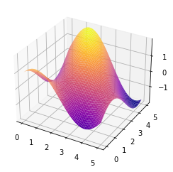
Contour plots
f = lambda x, y: np.sin(x) + np.cos(x+y)*np.cos(x)
X = np.linspace(0, 5, 100)
Y = np.linspace(0, 5, 100)
X, Y = np.meshgrid(X, Y)
Z = f(X, Y)
plt.contour(X, Y, Z, 20, colors='black')
plt.contourf(X, Y, Z, 20, cmap='RdGy')
plt.colorbar()
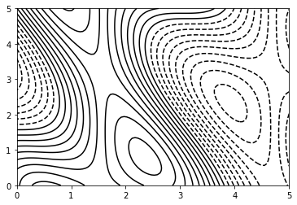
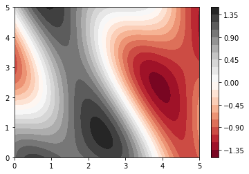
Histogramme
plt.hist(x[:,0], bins=20)
plt.xlabel('longueur sépale')
plt.ylabel('nombre de sépales')
plt.hist2d(x[:,0], x[:, 1], cmap='Blues')
plt.xlabel('longueur sépale')
plt.ylabel('largeur sépale')
plt.colorbar()
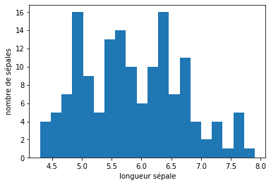
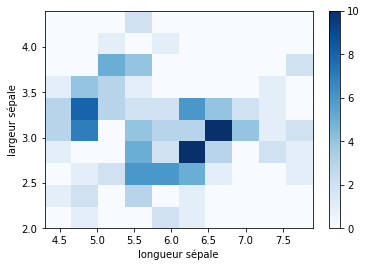
4. Bibliothèque Pandas
5. Combinaison des bibliothèques
6. Conclusion
7. Bibliographie
https://numpy.org/doc/stable/user/absolute_beginners.html
https://courspython.com/apprendre-numpy.html
https://www.youtube.com/playlist?list=PLO_fdPEVlfKqMDNmCFzQISI2H_nJcEDJq